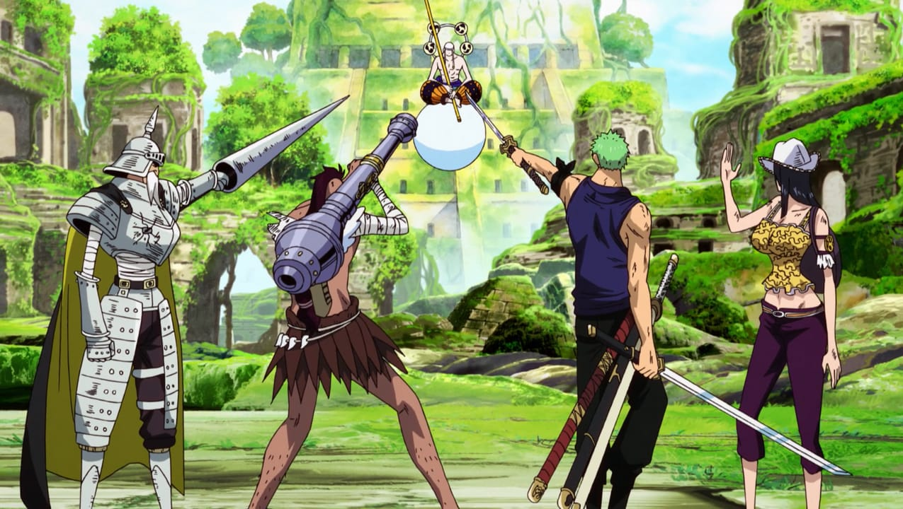

Konflik Shandia & Skypiea
Konflik ini terjadi dalam Skypiea Arc dari anime One Piece, dan menjadi inti cerita yang menyentuh tema sejarah, warisan, dan perebutan tanah. Ketegangan dimulai ketika sebagian dari Pulau Jaya terlempar ke langit oleh Knock Up Stream, membawa serta tanah suci yang dulunya dihuni oleh suku Shandia. Tanah itu berubah menjadi Upper Yard, yang kemudian diklaim oleh penduduk langit sebagai tempat suci milik mereka.
Selama lebih dari 400 tahun, Shandia berjuang untuk merebut kembali tanah leluhur mereka, sementara penduduk Skypiea mempertahankannya sebagai wilayah sakral. Pertarungan terus berlangsung tanpa titik terang, hingga kedatangan Luffy dan kru Topi Jerami menjadi titik balik. Mereka membantu membuka kebenaran di balik sejarah pulau, mengalahkan tirani Enel, dan menyatukan kembali dua pihak yang selama ini terpecah oleh kesalahpahaman dan perebutan warisan.